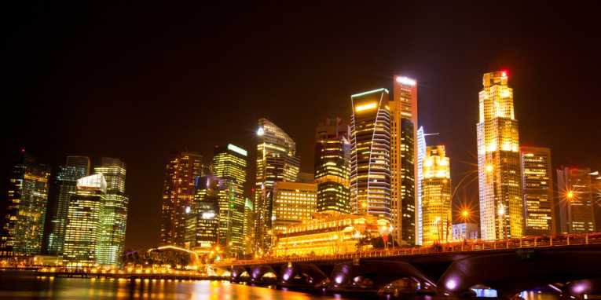

വിവിധ വർണങ്ങളിലുള്ള പൂക്കൾ, നീലിമ-യാർന്ന ആകാശം, ഉദയാസ്തമയ-ങ്ങളിലെ ആകാശ-ം, അരുണ-സൂര്യൻ, നയന-മനോഹ-രമായ മഴവില്ല് -
എത്ര വൈവിധ്യമാർന്ന വർണങ്ങൾ!
ഈ വർണവൈവിധ്യങ്ങൾ എങ്ങനെയാണ് രൂപപ്പെടുന്നത്?
എങ്ങനെയാണ് അവ നമുക്ക് ദൃശ്യമാകുന്നത്? കാഴ്ചയുടെയും വർണങ്ങളുടെയും ലോകത്ത് നമുക്കൊന്നു സഞ്ചരിച്ചു നോക്കാം.
കണ്ണും കാഴ്ചയും
എങ്ങനെയാണ് വസ്തുക്കൾ ദൃശ്യമാകുന്നതെന്ന് നിങ്ങൾക്കറിയാമോ? കണ്ണിലെ
പ്രതിബിംബരൂപീക-രണം ചിത്രീക-രിച്ചിരിക്കുന്നത് നിരീക്ഷിക്കൂ.
സീലിയറി പേശി
റെറ്റിന
എെറിസ്
ലെൻസ്
$ സ്റ്റാന്റേർഡ് - ത
എെറിസിന്റെ മധ്യഭാഗത്തുള്ള കൃഷ്ണമ-ണിയിൽ (പ്യൂപ്പിൾ) കൂടിയാണ് ഒരു
വസ്തുവിൽനിന്നുള്ള പ്രകാശം കണ്ണിലെ ലെൻസിൽ പതിക്കുന്നത്. ഇങ്ങനെ
ലെൻസ് രൂപപ്പെടുത്തുന്ന പ്രതിബിംബം റെറ്റിന-യിൽ പതിക്കുമ്പോൾ നാം
വസ്തുക്കളെ കാണുന്നത് എങ്ങനെയാണെന്ന് ജീവശാസ്ത്രം ക്ലാസിൽ പഠിച്ചിട്ടുണ്ടല്ലോ. എന്നാൽ എല്ലാ അകല-ങ്ങളിലുള്ള വസ്തുക്കളെയും നമുക്ക്
വ്യക്തമായി കാണാൻ കഴിയുമോ?
ഒരു പുസ്തകം മൂക്കിൽ സ്പർശിക്കുന്ന വിധത്തിൽ പിടിച്ചുകൊണ്ട് വായിക്കാൻ ശ്രമിക്കൂ.
അക്ഷര-ങ്ങൾ വ്യക്തമായി കാണാൻ കഴിയുന്നുണ്ടോ? പുസ്തകം അകലേക്ക്
നീക്കിയാലോ? കണ്ണിൽനിന്ന് എത്ര അകല-ത്തിലെത്തുമ്പോഴാണ് വ്യക്തമായി കാണാൻ കഴിയുന്നത്? ഒരു മീറ്റർസ്കെയിൽ ഉപയോഗിച്ച് അളന്നു
നോക്കൂ. ഇങ്ങനെ കിട്ടുന്ന കുറഞ്ഞ ദൂരത്തെ വ്യക്തമായ കാഴ്ചയ്ക്കുള്ള
കുറഞ്ഞ ദൂരം (ഘലമ ഏെറശമേെിരല ഈള റശശേെിര ഏ്ശശെീി) എന്ന് പറയുന്നു.
ഒരു വസ്തുവിനെ വ്യക്തമായി കാണാൻ കഴിയുന്ന ഏറ്റവും അടുത്തുള്ള
ബിന്ദുവിനെ "നിയർ പോയിന്റ ്' (ചലമൃ ഉീശി)േ എന്ന് പറയുന്നു. ആരോഗ്യമുള്ള കണ്ണുകൾക്ക് വ്യക്തമായ കാഴ്ചയ്ക്കുള്ള കുറഞ്ഞ -ദൂരം 25 രാ
ആണെന്ന് കണക്കാക്കിയിരിക്കുന്നു.
ഇതുപോലെ ഒരു വസ്തുവിനെ വ്യക്തമായി കാണാൻ കഴിയുന്ന ഏറ്റവും
കൂടിയ ദൂരം എത്രയായിരിക്കും?
ഒരു വസ്തുവിനെ വ്യക്തമായി കാണാൻ കഴിയുന്ന ഏറ്റവും അകലെയുള്ള ബിന്ദുവാണ് ÿഫാർ പോയിന്റ ് (എമൃ ഉീശി)േ. ഈ ദൂരം അനന്ത
മായി കണക്കാക്കപ്പെട്ടിരിക്കുന്നു.
പുസ്തകം വായിക്കുമ്പോഴും നക്ഷത്രങ്ങളെ നിരീക്ഷിക്കുമ്പോഴും വ്യക്തമായ പ്രതിബിംബം റെറ്റിന-യിൽത്തന്നെ രൂപപ്പെടുന്നത് എപ്രകാര-മായിരിക്കും? ഇവിടെ വസ്തുക്കൾ വ്യത്യസ്ത അകല-ങ്ങളിലാണല്ലോ സ്ഥിതി
ചെയ്യുന്നത്. എന്നാൽ റെറ്റിനയും ലെൻസും തമ്മിലുള്ള അകല-ത്തിൽ മാറ്റമുണ്ടാകുന്നുണ്ടോ? ഇത് എങ്ങനെയെന്നറിയുന്നതിനായി ലെൻസിന്റെ പ്രതിബിംബ രൂപീക-രണ-വുമായി ബന്ധപ്പെട്ട് ഒരു പരീക്ഷണം ചെയ്തുനോക്കാം.
പരീക്ഷണ-ത്തിനായി സ്ക്രീനും ലെൻസും തമ്മിലുള്ള അകലം = 40 സെ.മീ
ആയി ക്രമീക-രിക്കുക.
132
ചിത്രം 6.2
Page 37
Figure fig_ch06_p037_01 (Page 37)
കാഴ്ചയും വർണങ്ങളുടെ ലോകവും
ലെൻസിൽ നിന്നും 13 രാ അകലെയായി ഒരു മെഴുകുതിരി കത്തിച്ചുവയ്ക്കുക.
വസ്തുവിന്റെ വ്യക്തമായ പ്രതിബിംബം സ്ക്രീനിൽ ലഭിക്കുന്നുണ്ടോ?
ലെൻസും സ്ക്രീനും തമ്മിലുള്ള അകലം മാറ്റാതെ ലെൻസ് ഹോൾഡറിൽ 10 രാ,
15 രാ, 20 രാ എന്നീ ഫോക്കസ്ദൂരമുള്ള വിവിധ ലെൻസുകൾ ഓരോന്നായി ഉപയോഗിച്ചുനോക്കൂ. ഏത് ഫോക്കസ്ദൂരമുള്ള ലെൻസ് ഉപയോഗിക്കുമ്പോഴാണ്
പ്രതിബിംബം വ്യക്തമാകുന്നത്?
ലെൻസിൽനിന്നു വസ്തുവിലേക്കുള്ള (മെഴുകുതിരി) അകലം 24 രാ, 40 രാ ആക്കി
പരീക്ഷണം ആവർത്തിക്കൂ. നിങ്ങൾക്ക് കിട്ടിയ ലെൻസിന്റെ ഫോക്കസ് ദൂരങ്ങൾ
പട്ടിക-യുമായി താരതമ്യം ചെയ്തുനോക്കൂ.
ലെൻസിൽനിന്നു
വസ്തുവിലേക്കുള്ള
അകലം (രാ)
ലെൻസിൽനിന്നു
സ്ക്രീനിലേക്കുള്ള
വ്യക്തമായ പ്രതിബിംബം ലഭിക്കാൻ
യോജിച്ച ലെൻസിന്റെ
13
40
10
24
40
15
40
40
20
അകലം (രാ)
ഫോക്കസ് ദൂരം (രാ)
പട്ടിക 6.1
പട്ടിക-പ്രകാരം ലെൻസിൽനിന്ന് ഒരു നിശ്ചിത അകല-ത്തിൽ ഇരിക്കുന്ന സ്ക്രീനിലേക്ക് വ്യത്യസ്ത അകല-ങ്ങളിലുള്ള വസ്തുക്കളുടെ പ്രതിബിംബം വ്യക്തത-യോടെ
ലഭിക്കാൻ വ്യത്യസ്ത ഫോക്കസ് ദൂരമുള്ള ലെൻസുകൾ ഉപയോഗിക്കേണ്ടിവന്നില്ലേ.
കണ്ണിനും ഇതേ ധർമം തന്നെയല്ലേ ചെയ്യേണ്ടത്?
വ്യക്തമായ കാഴ്ചയനുഭവം ഉണ്ടാക്കാൻ ഫാർ പോയിന്റ ് മുതൽ നിയർ പോയിന്റ ്
വരെയുള്ള വസ്തുക്കളുടെ പ്രതിബിംബം റെറ്റിന-യിൽ വ്യക്തമായി രൂപീക-രിക്കണം.
നാം അടുത്തുള്ള വസ്തുക്കളെ നോക്കുമ്പോൾ കണ്ണിലെ കോൺവെക്സ് ലെൻസുമായി ബന്ധപ്പെട്ടിരിക്കുന്ന സീലിയറി പേശികൾ സങ്കോചിക്കുകയും ലെൻസിന്റെ
വക്രത കൂടുകയും ഫോക്കസ് ദൂരം കുറയുകയും ചെയ്യുന്നു. അകലെയുള്ള വസ്തുക്കളെ നോക്കുമ്പോൾ സീലിയറി പേശികൾ വിശ്രമാവസ്ഥ പ്രാപിക്കുകയും
ലെൻസിന്റെ വക്രത കുറഞ്ഞ് ഫോക്കസ്ദൂരം കൂടുകയും ചെയ്യുന്നു.
വസ്തുക്കളുടെ സ്ഥാനം എവിടെയായിരുന്നാലും പ്രതിബിംബം റെറ്റിന-യിൽ
പതിക്കത്തക്ക വിധം ലെൻസിന്റെ വക്രത വ്യത്യാസ-പ്പെടുത്തി ഫോക്കസ്
ദൂരം ക്രമീക-രിക്കാനുള്ള കഴിവാണ് കണ്ണിന്റെ സമഞ്ജന-ക്ഷമത (ജീംലൃ ഈള
മരരീാീറമശേീി).
133
കണ്ണിൽ പ്രതിബിംബം രൂപീക-രിക്കപ്പെടുന്നതിന്റെ രേഖാചിത്രങ്ങളാണ് തന്നിരിക്കുന്നത്.
$
ഇവയിൽ ഓരോന്നിലും പ്രതിബിംബം രൂപപ്പെടുന്നത് എവിടെയാണ്?
$
റെറ്റിന-യിൽത്തന്നെ കൃത്യമായി പ്രതിബിംബം രൂപപ്പെടുന്നത് ഏതിലാണ്?
(മ)
(മ)
(യ)
ചിത്രം 6.3
$
(ര)
മറ്റുള്ളവ-യിൽ റെറ്റിന-യിൽ പ്രതിബിംബം രൂപപ്പെടാത്തതിനു കാരണങ്ങൾ
എന്തായിരിക്കും?
$ കണ്ണിലെ ലെൻസിന്റെ പവർ വ്യത്യാസ-പ്പെടുന്നത്.
$ നേത്രഗോള-ത്തിന്റെ വലുപ്പം വ്യത്യാസ-പ്പെടുന്നത്.
ഇത്തരം സന്ദർഭങ്ങളിൽ കാഴ്ചയ്ക്കു വൈകല്യം ഉണ്ടായിരിക്കുമോ? നിങ്ങളുടെ
നിഗമ-നങ്ങൾ കുറിക്കൂ. ഇതിന് പരിഹാരം എന്ത്?
ദീർഘദൃഷ്ടി (ഒ്യുലൃാലൃേീുശമ ഈൃ ഘീിഴശെഴവലേറില)ൈ
ദീർഘദൃഷ്ടിയുള്ള ഒരാളുടെ കണ്ണിൽ പ്രതിബിംബം രൂപപ്പെടുന്നതിന്റെ ചിത്രങ്ങളാണ് താഴെ കൊടുത്തിരിക്കുന്നത്.
ച ' നിയർ പോയിന്റ ്
(മ)
ച
ചിത്രം 6.4
$
134
(യ)
വസ്തു നിയർ പോയിന്റ ഇലായിരിക്കുമ്പോൾ (ചിത്രം 6.4 (മ)) പ്രതിബിംബം
റെറ്റിന-യിൽ രൂപപ്പെടുന്നുണ്ടോ? വ്യക്തമായ പ്രതിബിംബം കാണാൻ കഴിയുമോ?
$ വസ്തു അകലെയായിരിക്കുമ്പോൾ (ചിത്രം 6.4 (യ)) പ്രതിബിംബം റെറ്റിനയിൽ രൂപപ്പെടുന്നുണ്ടോ? വ്യക്തമായ പ്രതിബിംബം കാണാൻ കഴിയുമോ?
കണ്ണിന്റെ ഈ ന്യൂനത-യാണ് ദീർഘദൃഷ്ടി.
അകലെയുള്ള വസ്തുക്കളെ വ്യക്തമായി കാണാമെങ്കിലും പ്രതിബിംബം റെറ്റിനയിൽ കൃത്യമായി രൂപപ്പെടാത്തതുമൂലം ചിലർക്ക് അടുത്തുള്ള വസ്ത-ുക്കളെ
വ്യക്തമായി കാണാൻ കഴിയുന്നില്ല. കണ്ണിന്റെ ഈ വൈകല്യമാണ് ദീർഘദൃഷ്ടി. ഇത്തര-ത്തിലുള്ള ഒരു വ്യക്തിയുടെ നേത്രങ്ങളുടെ നിയർ പോയിന്റ ്
25 രാ ൽ കൂടുതലായിരിക്കും.
ഈ ന്യൂനതയ്ക്ക് കാരണ-മെന്തായിരിക്കും?
$ നേത്രഗോള-ത്തിന്റെ വലുപ്പവുമായി ബന്ധപ്പെടുത്തി കാരണം കണ്ടെത്താനാവുമോ? വലുപ്പം കൂടുതൽ/കുറവ്
$ ലെൻസിന്റെ ഫോക്കസ്ദൂരവുമായി (അല്ലെങ്കിൽ പവർ) ബന്ധപ്പെടുത്തിയാലോ?
(പവർ കൂടുതൽ/കുറവ്)
നിങ്ങളുടെ നിഗമ-നങ്ങൾ സയൻസ് ഡയറിയിൽ കുറിക്കുക.
ദീർഘദൃഷ്ടി എങ്ങനെ പരിഹ-രിക്കാം?
അനുയോജ്യമായ പവറുള്ള കോൺവെക്സ് ലെൻസ് ഉപയോഗിച്ച് ഇതു പരിഹ-രിക്കാം.
ചിത്രം 6.5
ഹ്രസ്വദൃഷ്ടി
(ങ്യീുശമ ഈൃ ചലമൃശെഴവലേറില)ൈ
ചില ആളുക-ളിൽ നേത്രഗോള-ങ്ങൾക്കു വലുപ്പം കൂടുതലായിരിക്കും. എന്നാൽ ചിലരുടെ നേത്രഗോള-ത്തിനു സാധാരണ വലുപ്പമാണെങ്കിലും ലെൻസിന്റെ പവർ
കൂടുതലായിരിക്കും.
അത്തരം സന്ദർഭങ്ങളിൽ പ്രതിബിംബം എവിടെയാണു രൂപപ്പെടുക? ചിത്രം 6.6
വിശകലനം ചെയ്ത് ഉത്തരം എഴുതൂ.
വസ്തു കണ്ണിൽനിന്ന് അകലെ ഛ എന്ന സ്ഥാനത്തായിരിക്കുമ്പോൾ പ്രതിബിംബം
എവിടെയാണ് രൂപപ്പെടുന്നത്? വസ്തുവിനെ വ്യക്തമായി കാണാൻ കഴിയുമോ?
വസ്തു ഛ1 വിൽ ആയിരിക്കുമ്പോൾ വസ്തുവിനെ വ്യക്തമായി കാണാൻ കഴിയുമോ?
$
അകലെയുള്ളവ വ്യക്തമായി കാണാൻ കഴിയാത്തത് എന്തുകൊണ്ടായിരിക്കും?
$
ഇതിനു പരിഹാര-മെന്ത്?
ചിലർക്ക് അടുത്തുള്ള വസ്തുക്കൾ വ്യക്തമായി കാണാമെങ്കിലും അകലെയുള്ളവ വ്യക്തമായി കാണാൻ കഴിയുന്നില്ല. അത്തരം നേത്രപരിമിതിയാണ്
ഹ്രസ്വദൃഷ്ടി. ഹ്രസ്വദൃഷ്ടിയുള്ളവരുടെ നേത്രങ്ങളുടെ ഫാർ പോയിന്റ ് (എമൃ
ഉീശി)േ അനന്തത-യിലായിരിക്കില്ല; കണ്ണിൽനിന്ന് ഒരു നിശ്ചിത അകല-ത്തിലായിരിക്കും.
അനുയോജ്യമായ പവറുള്ള കോൺകേവ് ലെൻസ് ഉപയോഗിച്ച് ഇത് പരിഹ-രിക്കാം.
ചിത്രം 6.7
ലെൻസിന്റെ പവർ (ജീംലൃ ഈള മ ഹലി)െ
കാഴ്ചയ്ക്ക് ബുദ്ധിമുട്ടുള്ള ഒരാൾ നേത്രവിദഗ്ധനെ കണ്ടപ്പോൾ അദ്ദേഹം
കണ്ണട വാങ്ങാനായി നൽകിയ കുറിപ്പി-ൽ +1.5 ഉ, --- 2ഉ എന്ന് രേഖപ്പെടുത്തിയിരിക്കുന്നു.
$ കുറിപ്പിൽ ഡോക്ടർ സൂചിപ്പിച്ചത് എന്തിനെക്കുറിച്ചാണ്?
$ കുറിപ്പിൽ എഴുതിയ ലെൻസുകൾ ഏതെല്ലാം തരമാണ്?
പ്രായമായവർ പത്രങ്ങളും മറ്റും ദൂരെ പിടിച്ച് വായിക്കുന്നതു നിങ്ങൾ
ശ്രദ്ധിച്ചിരിക്കുമല്ലോ. പ്രായമായവരുടെ കണ്ണുകൾക്കുള്ള ഒരു ന്യൂനതയാണ് വെള്ളെഴുത്ത്.
വെള്ളെഴുത്ത് (ജൃലയെ്യീുശമ)
136
ആരോഗ്യമുള്ള കണ്ണിനെ സംബന്ധിച്ചിട-ത്തോളം നിയർ പോയിന്റിലേക്കുള്ള
ദൂരം എത്രയാണ്?
പ്രായം കൂടിയ-വർക്ക് നിയർ പോയിന്റിലേക്കുള്ള അകലം 25 രാ നേക്കാൾ
കൂടിയിരിക്കും. ഇതിനു കാരണം സിലിയറി പേശികളുടെ ക്ഷമത കുറയുന്നതാണ്. അതായത്, അത്തര-ക്കാർക്ക് പവർ -ഓഫ് അക്കോമ-ഡേഷ-നുള്ള കഴിവ്
കുറവായിരിക്കും. ഇതാണ് വെള്ളെഴുത്ത്.
അനുയോജ്യമായ പവറുള്ള കോൺവെക്സ് ലെൻസ് ഉപയോഗിച്ച് ഇതു പരിഹ-രിക്കാം.
ത്രിമാന-കാഴ്ച
കാഴ്ചയ്ക്ക് ഒരു കണ്ണുപോരേ,
രണ്ട് കണ്ണുകളുടെ ആവശ്യക-തയുണ്ടോ എന്ന് നിങ്ങൾ ചിന്തിച്ചിനേത്രദാനം മഹാദാനം എന്നാണല്ലോ.
രണ്ട് കണ്ണുകളും ഉപയോകാഴ്ചശ-ക്തിയില്ലാത്തവ-രിൽ ചിലരെയെങ്കിലും കാഴ്ചയുടെ ട്ടുണ്ടോ?
കാഴ്ചയാണ് പൂർണത-യുലോകത്തേക്കു കൈപിടിച്ചുയർത്താൻ കോർണിയ മാറ്റി ഗിള്ളച്ചതുള്ള്. ഒരു
കണ്ണുകൊണ്ട് 150
വയ്ക്കൽ വഴി നമുക്കു സാധിക്കും.
കോണള-വിലുളള ഒരു ദ്വിമാനതലലുള്ള കാഴ്ചമാത്രമേ സാധ്യഏതു പ്രായക്കാർക്കും നേത്രദാനം നടത്താവുന്നതാണ്. ചില ത്തിരണ്ട് കണ്ണുംകൊണ്ട് ഒരു
പ്രതേ്യക-തരം അസുഖ-മുള്ളവ-രുടെ നേത്രപ-ടലം മാത്രമാണ് ഉപ- മാവസ്കതൂ. ഉവിനെ
മ്പോൾ 180
യോഗിക്കാൻ കഴിയാത്തത്. നേത്രദാനത്തിനു സമ്മതം നൽകിയ കോണള-വിൽ നോക്കുവിസ്തൃത-മായ ഒരു
വ്യക്തിയുടെ മരണ-ശേഷം ആറ് മണിക്കൂറിനുള്ളിൽ കോർണിയ ത്രിമാ- ന - ത - ല - ത്ത
ഉള്ള കാഴ് ച
എടു- ക്ക - ണ ം. എന്നന്നേക്കു- മ ആയി കണ്ണ- ട - യ ് ക്ക ഉ- ന്ന - വ ർക്ക് സാധ്യ- മ ആ- ക ഉ- ന്ന ഉ.ി- ലരണ്ട്
മറ്റുള്ളവരുടെ ജീവിതം പ്രകാശ-മാനമാക്കാൻ നേത്രദാന-ത്തിലൂടെ ലെയും കാഴ്ചകൾ ഏകോപകണ്ണിപ്പിച്ച്
കഴിയും.
വസ്തു സ്ഥിതിചെയ്യുന്ന ദൂരത്തെറിച്ചുള്ള ഒരു ധാരണ-കൂടി ഉളനേത്രദാന-ത്തിന്റെ പ്രാധാന്യം മറ്റുള്ളവരെ ബോധ്യപ്പെടുത്താനും ക്കുഅവരുടെ പങ്കാളിത്തം ഉറപ്പാക്കാനും ഉതകുന്ന പ്രവർത്തന-ങ്ങൾ വാക്കുന്നത് തലച്ചോറാണ്.
നേത്രദാനം
ഈ
ഈ
കൂട്ടുകാരോടൊപ്പം ചേർന്ന് സംഘടിപ്പിക്കൂ.
പ്രകൃതിയിലെ വിവിധ വസ്തുക്കൾ എങ്ങനെ ദൃശ്യമാകുന്നുവെന്നാണ് നാം
ഇതുവരെ മനസ്സിലാക്കിയ-ത്. എന്നാൽ സൂര്യപ്രകാശം പതിക്കുമ്പോൾ ഇവ
വിവിധ വർണങ്ങളിൽ കാണപ്പെടുന്നതിന് കാരണ-മെന്താണ്? പ്രകാശ-ത്തിന്റെ
നിറവും സ്വഭാവവുമ-നുസ-രിച്ച് വസ്തുക്കളെ കാണുന്ന നിറങ്ങളിലും മാറ്റം
വരുമോ? ഇതിനെക്കുറിച്ച് കൂടുത-ലറിയുന്നതിനായി ചില പ്രകാശ പ്രതിഭാസങ്ങൾ നമുക്കു പരിച-യപ്പെടാം.
പ്രകാശപ്രകീർണനം (ഉശുെലൃശെീി ഈള ഹശഴവ)േ
സൂര-്യപ്രകാശം പ്രിസത്തിലൂടെ കടത്തിവിട്ട് സ്ക്രീനിൽ പതിപ്പിച്ചുനോക്കൂ.
ഏതെല്ലാം വർണങ്ങളാണ് സ്ക്രീനിൽ ദൃശ്യമാകുന്നത്?
$ വയലറ്റ് (ഢശീഹല)േ
$ കടുംനീല (കിറശഴീ)
$
സൂര-്യപ്രകാശം
ചിത്രം 6.8
137
സൂര-്യപ്രകാശം മാത്രമാണോ ഇങ്ങനെ ഘടക-വർണങ്ങളായി വേർതിരിയുന്നത്? നമുക്ക് പരിശോധിക്കാം.
പ്രിസത്തിലേക്ക് ഒരു ടോർച്ചിൽനിന്നുള്ള -പ്രകാശം പതിപ്പിച്ചാലോ?
ടോർച്ചിന്റെ ഗ്ലാസിൽ കറുത്ത കടലാസ് ഒട്ടിക്കുക. കടലാസിന്റെ മധ-്യത്തിൽ ചെറിയ ഒരു സുഷിരം ഉണ്ടാക്കൂ. മറുഭാഗത്ത് ഒരു സ്ക്രീൻ സജ്ജീക-രിക്കുക.
ഞ
ടോർച്ചിൽനിന്നുള്ള പ്രകാശബീം ചിത്രത്തിലേതുഢ
പോലെ പ്രിസത്തിലേക്കു ചരിച്ചു പതിപ്പിക്കൂ. സ്ക്രീനിൽ എന്തു കാണുന്നു?
ചിത്രം 6.9
$ സ്ക്രീനിൽ രൂപപ്പെട്ട വർണങ്ങൾ ഏതൊക്കെയാണ്?
$ സൂര-്യപ്രകാശ-ത്തിൽനിന്നു ലഭിച്ച ഘടകവർണങ്ങൾ തന്നെയല്ലേ
സ്ക്രീനിൽ രൂപപ്പെട്ടത്?
123
123
123
123
123
123
123
123
123
123
123
123
123
123
123
123
123
123
123
123
123
123
123
123
123
ഒന്നിൽ കൂടുതൽ വർണങ്ങൾ സംയോജിച്ചുണ്ടാകുന്ന പ്രകാശ-മാണ്
സമന്വിതപ്രകാശം (ഇീാുീശെലേ ഹശഴവ)േ.
സമന്വിതപ്രകാശം ഘടക-വർണങ്ങളായി വേർതിരിയുന്ന പ്രതിഭാസമാണ് പ്രകീർണനം (ഉശുെലൃശെീി). പ്രകീർണനഫലമായുണ്ടാകുന്ന വർണങ്ങളുടെ ക്രമമായ വിതര-ണത്തെ വർ-ണരാജി (ഢശശെയഹല ഉെലരൃേൗാ) എന്ന്
പറയുന്നു.
ചിത്രം 6.9 നിരീക്ഷിക്കൂ.
$ പ്രകീർണനഫലമായി ഏതു വർണത്തിനാണ് കൂടുതൽ വ്യതിയാനം
സംഭവിച്ചത്?
$ ഏതു വർണത്തിനാണ് കുറഞ്ഞ വ്യതിയാനം?
വർണങ്ങളുടെ ദിശാവ്യതിയാനം വ്യത-്യസ്തമാവാൻ എന്തായിരിക്കും
കാരണം?
ഇവയുടെ തരംഗ-ദൈർഘ്യം ഒന്ന് താരതമ്യം ചെയ്തു നോക്കിയാലോ?
തന്നിരിക്കുന്ന പട്ടിക പരിശോധിക്കൂ. അതിൽ,
വർണം
വയലറ്റ് (ഢ)
കടുംനീല (ക)
നീല (ആ)
പച്ച
(ഏ)
മഞ്ഞ (ഥ)
ഓറഞ്ച് (ഛ)
ചുവപ്പ് (ഞ)
138
$ തരംഗദൈർഘ്യം കുറഞ്ഞ വർണമേതാണ്?
$ തരംഗദൈർഘ്യം കൂടിയതോ?
$ പ്രിസത്തിലൂടെ പ്രകാശം കടന്നുപോകുമ്പോൾ
തരംഗദൈർഘ്യം കൂടിവരുന്നതിന-നുസ-രിച്ച്
വർണങ്ങൾക്കുള്ള വ്യതിയാനം എപ്രകാര-മാണ്?
കൂടുമോ കുറയുമോ?
പരീക്ഷണത്തിന്റെയും പട്ടിക-യുടെയും അടിസ്ഥാനത്തിൽ നിങ്ങളുടെ നിഗമ-നങ്ങൾ കുറിക്കൂ.
പ്രിസത്തിൽ ചരിഞ്ഞു പ്രവേശിക്കുന്ന അവസ-രത്തിലും പ്രിസത്തിൽനിന്നു പുറത്തുക-ടക്കുമ്പോഴും
പ്രകാശ-ത്തിന് അപവർത്തനം സംഭവിക്കുന്നു. വ്യതി-
യാന-ത്തിന്റെ അളവ് തരംഗ-ദൈർഘ്യത്തെ ആശ്രയിച്ചിരിക്കുന്നതിനാൽ
വ്യത്യസ്ത അളവുകളിൽ വർണങ്ങൾക്ക് വ്യതിയാനം സംഭവിക്കുന്നതാണ്
പ്രകീർണന-ത്തിനു കാരണം.
പ്രിസത്തിലൂടെ പ്രകാശം കടന്നുപോകുമ്പോൾ മാത്രമാണോ പ്രകീർണനം
സംഭവിക്കുന്നത്? നമുക്കു നോക്കാം.
മഴവില്ല് (ഞമശിയീം)
നിങ്ങൾ മഴവില്ല് നിരീക്ഷിച്ചിട്ടുണ്ടല്ലോ.
നല്ല സൂര്യപ്രകാശ-മുള്ളപ്പോൾ സൂര്യന്റെ എതിർദിശ-യിൽ അന്തരീക്ഷത്തിലേക്ക് വെള്ളം സ്പ്രേ ചെയ്തുനോക്കൂ. എന്തു നിരീക്ഷിക്കുന്നു? പ്രകാശ
വർണങ്ങൾ രൂപപ്പെട്ടല്ലോ. ലഭിച്ച വർണരാജിയെ മഴവില്ലിലെ വർണങ്ങളുമായി താരതമ്യം ചെയ്യൂ.
$ എപ്പോഴൊക്കെയാണ് മഴവില്ലുണ്ടാകുന്നത്?
$ മഴവില്ല് കിഴക്കുഭാഗത്തു കാണുമ്പോൾ സൂര-്യൻ ഏതു ഭാഗത്തായിരിക്കും?
$ പടിഞ്ഞാറുഭാഗത്തു മഴവില്ല് കാണുമ്പോഴോ?
സൂര-്യപ്രകാശ-ത്തിന് അന്തരീക്ഷത്തിലെ ജലക-ണിക-കളിൽ സംഭവിക്കുന്ന
പ്രകീർണനം കാരണ-മാണ് മഴവില്ലുണ്ടാകുന്നതെന്ന് നിങ്ങൾ മനസ്സിലാക്കിയിട്ടുണ്ടല്ലോ.
ജലക-ണിക-കളിലൂടെ കടന്നുപോകുന്ന സൂര-്യപ്രകാശ-ത്തിന് എപ്രകാരമാണ് പ്രകീർണനം സംഭവിക്കുന്നത്?
ചിത്രം 6.10 നിരീക്ഷിച്ചും നൽകിയ വിവര-ങ്ങൾ വിശക-ലനം ചെയ്തും മഴവില്ലിന്റെ ആർക്ക് രൂപം
മഴവില്ലിന്റെ കേന്ദ്രത്തെയും നിരീതാഴെ കൊടുത്ത ചോദ്യങ്ങൾക്ക് ഉത്തരം കണ്ടെത്തൂ.
ഢ
ഞ
ചിത്രം 6.10
$ പ്രകാശ-രശ്മി ഒരു ജലക-ണിക-യിലൂടെ കടന്നുപോകുമ്പോൾ എത്ര
പ്രാവശ്യം അപവർത്തനം സംഭവിച്ചു?
$ ആന്തരപ്രതിപ-തനമോ?
$ മഴവില്ലിന്റെ പുറംവ-ക്കിൽ കാണപ്പെടുന്ന വർണമേതാണ്?
$ അകത്തെ അരുകിലോ?
ക്ഷക-നെയും തമ്മിൽ യോജിപ്പിക്കുന്ന രേഖയാണ് ദൃഷ്ടിരേഖ.
ജലകണി- ക - ക - ള ഇൽ പതി- ക്ക ഉന്ന
രശ്മികൾ ദൃഷ്ടിരേഖയ്ക്ക് സമാന്തര-മായിരിക്കണം. ജലക-ണിക-കളിൽനിന്നു പുറത്തുവ-രുന്ന ഓരോ
വർണര-ശ്മിയും ദൃഷ്ടിരേഖ-യുമായി 40.8 ഡിഗ്രി മുതൽ 42.7
ഡിഗ്രി വരെ നിശ്ചിത-കോൺ ഉണ്ടാക്കുന്നു. ഇതിൽ കൂടുതൽ കോണ
ളവ് 42.7ീ ഉണ്ടാക്കുന്ന ചുവപ്പ് മഴവില്ലിന്റെ പുറംവ-ക്കിലും കുറഞ്ഞ
കോണളവ് 40.8 ഈ ഉണ്ടാ- ക്ക ഉന്ന
വയലറ്റ് അകത്തെ അരുകിലുമായി
കാണപ്പെടുന്നു.
സൂര്യപ്രകാശം ജലക-ണിക-കളിലൂടെ കടന്നുപോകുമ്പോൾ അപവർത്തന-ത്തിനും ആന്തരപ്രതിപ-തനത്തിനും വിധേയ-മാകുന്നു. ദൃഷ്ടിരേഖ-യുമായി ഒരേ
പച്ച, നീല, ചുവപ്പ് എന്നീ മൂന്ന് വർണങ്ങളെ കോണളവിൽ കാണപ്പെടുന്ന കണിക-കളിലൂടെ പുറപ്രകാശ-ത്തിന്റെ പ്രാഥമികവർണങ്ങൾ എന്ന് -ത്തുവ-രുന്ന പ്രകാശ-രശ്മി ഒരേ വർണത്തിലുള്ളവ
പറയുന്നു. മറ്റു വർണങ്ങൾ കൂട്ടിച്ചേർത്ത് പ്രാഥ- ആയതിനാൽ ഇവ ഒരു വൃത്തചാപ-ത്തിൽ സ്ഥിതിമികവർണങ്ങൾ നിർമിക്കാൻ കഴിയില്ല. എന്നാൽ ചെയ്യുന്നതായി നമുക്കനുഭ-വപ്പെടുന്നു. അപ്രകാരം
ഇവ ഉപയോഗിച്ച് മറ്റു വർണങ്ങൾ നിർമിക്കാൻ പുറംവക്കിൽ ചുവപ്പും അകവ-ശത്ത് വയലറ്റും മറ്റു
സാധിക്കും. ഒരേ തീവ്രത-യിലുള്ള പ്രാഥമിക വർണങ്ങൾ തരംഗ-ദൈർഘ്യത്തിന-നുസ-രിച്ച് ഇവയ്വർണങ്ങൾ ഏതെങ്കിലും രണ്ടെണ്ണം വീതം
കൂടി- ഏച്ചർന്ന് ഉണ്ടാ- ക ഉന്ന വർണ- ങ്ങ - ള ആണ് ക്കിട-യിലായും കാണപ്പെടുന്നു.
ദ്വിതീയവർണങ്ങൾ.
സൂര്യൻ ചക്രവാള-ത്തോട് അടുത്തുനിൽക്കുമ്പോൾ
പച്ച + ചുവപ്പ് = മഞ്ഞ
നമുക്ക് ദൃശ്യമാകുന്ന മഴവില്ലിന്റെ ഭാഗം കൂടുതപച്ച + നീല = സയൻ
ലായിരിക്കും. വിമാന-ത്തിൽനിന്ന് നോക്കിയാൽ
നീല + ചുവപ്പ് = മജന്ത
മഴവില്ല് വൃത്താകൃതിയിൽ കാണാൻ കഴിയും.
മൂന്ന് പ്രാഥമികവർണങ്ങളെയും സംയോജി- സൂര്യൻ ചക്രവാള-ത്തിൽനിന്ന് വളരെ ഉയര-ത്തിപ്പിച്ച് ധവള-പ്രകാശം നിർമിക്കാൻ കഴിയും.
ലായാൽ മഴവില്ല് അദൃശ്യമാകും.
ദൃശ്യപ്രകാശത്തെക്കുറിച്ചും അതിലെ ഘടകവർണങ്ങളെക്കുറിച്ചും നിങ്ങൾ മനസ്സിലാക്കിയല്ലോ.
ധവളപ്രകാശ-ത്തിലെ ഘടകവർണങ്ങളെല്ലാംകൂടി ചേർന്നാൽ വീണ്ടും
ധവളപ്രകാശം ലഭിക്കുമോ? ഒരു പ്രവർത്തനം ചെയ്തുനോക്കാം.
പ്രാഥമികവർണങ്ങളും ദ്വിതീയവർണങ്ങളും
(ജൃശാമൃ്യ മിറ ടലരീിറമൃ്യ
രീഹീൗൃ)െ
വർണങ്ങളുടെ പുനസ്സംയോജനം
പ്രിസത്തിലൂടെ ധവള-പ്രകാശം കടത്തിവിട്ട് ഘടകവർണങ്ങൾ സ്ക്രീനിൽ
പതിപ്പിക്കുക. സമാന-മായ മറ്റൊരു പ്രിസമെടുത്ത് പാദം (ആമലെ)
മുകളിൽ
വരത്തക്കവിധം ചിത്രത്തിലേതുപോലെ ആദ്യത്തെ പ്രിസത്തോട്
ചേർത്തുവയ്ക്കുക. ഇപ്പോൾ സ്ക്രീനിൽ എന്തു- കാണുന്നു?
$
ഒന്നാമത്തെ പ്രിസത്തിലൂടെ കടന്നുപോയപ്പോൾ പ്രകാശ-ത്തിന് എന്തു
സംഭവിച്ചു?
കാഴ്ചയും വർണങ്ങളുടെ ലോകവും
മറ്റൊരു പ്രവർത്തനംകൂടി ചെയ്തുനോക്കൂ.
ധവളപ്രകാ- ശ - ത്ത ഇലെ ഘട- ക - വ ർണ- ങ്ങ ളിലുള്ള നിറ- ങ്ങ ൾ
അതേ ക്രമത്തിലും അനുപാത-ത്തിലും ഡിസ്കിൽ പെയിന്റ ്
ചെയ്ത് ന്യൂട്ടന്റെ വർണപ്പമ്പരം നിർമിക്കാൻ അറിയാമല്ലോ.
$
വർണപ്പമ്പരം വേഗത്തിൽ കറക്കുമ്പോൾ ഏതു നിറത്തിൽ കാണപ്പെടുന്നു?
$
എന്തായിരിക്കും കാരണം?
⎛ 1
⎝
ചിത്രം 6.12
⎞
⎠
0.0625 സെക്കന്റിനുള്ളിൽ ⎜ 16 എ⎟ വർണപ്പമ്പര-ത്തിന്റെ ഏഴ്
നിറങ്ങളിൽനിന്നുള്ള പ്രകാശ-രശ്മികളും തുടർച്ചയായി റെറ്റിന- യ ഇൽ പതി- ക്ക ഉ- ന്ന തുകൊണ്ടാണ് ഡിസ് ക ് വെള്ള- യ ആയി
കാണുന്നത്.
വീക്ഷണസ്ഥിരത
ഒരു ദൃശ്യാനുഭവം നമ്മുടെ റെറ്റിന-
കണ്ണിന്റെ വീക്ഷണസ്ഥിരത എന്ന പ്രതേ്യകതകൊണ്ടാണ്
⎛1 ⎞
⎟െ സമയ-ത്തേക്ക്
16 ⎠
ന്യൂട്ടന്റെ വർണപ്പമ്പരം വെള്ളയായി കാണപ്പെട്ടത്. വീക്ഷണ-
യിൽ 0.0625 എ⎜⎝
സ്ഥിരതയ്ക്ക് കൂടുതൽ ഉദാഹ-രണ-ങ്ങൾ കണ്ടെത്തി എഴുതൂ.
തങ്ങിനിൽക്കും. ഈ പ്രതിഭാസ-മാണ്
$
വേഗത്തിൽ ചുഴറ്റുന്ന തീപ്പന്തത്തിന്റെ പാത വൃത്താകൃ-
വീക്ഷണസ്ഥിരത
തിയിൽ കാണപ്പെടുന്നു.
്ശശെീി). 0.0625 സെക്കന്റിനകത്ത്- ഒന്നിലധികം ദൃശ്യങ്ങൾ കണ്ടാൽ അവയു-
$
സൂര-്യാസ്തമ-യവേള-യിൽ പടിഞ്ഞാറൻ ചക്രവാളം ചുവക്കുന്നത് നിങ്ങൾ ശ്രദ്ധിച്ചിട്ടുണ്ടാവും. എന്താണിതിനു കാരണം?
പ്രകാശ-ത്തിന്റെ വിസരണം
(ജലൃശെലേെിരല ഈള
ടെ- എയല്ലാം പരി- ണ ത- ദ ഋ- ശ ്യാ- ന ഉ- ഭ വം
കണ്ണിലുണ്ടാകും.
(ടരമലേൃശിഴ ഈള ഹശഴവ)േ
പ്രകാശം നേർരേഖ-യിലാണ് സഞ്ചരിക്കുന്നതെങ്കിലും ക്ലാസ്മുറിക്കകത്തും
വീട്ടിനുള്ളിലും പകൽസമയത്ത് പ്രകാശം ലഭിക്കാറുണ്ടല്ലോ. എന്തുകൊണ്ടാണെന്ന് ചിന്തിച്ചിട്ടുണ്ടോ?
ഊർജതന്ത്രം $ സ്റ്റാന്റേർഡ് - ത
സൂര-്യപ്രകാശം അന്തരീക്ഷത്തിലൂടെ കടന്നുപോകുമ്പോൾ പ്രകാശ-കിരണങ്ങൾ അന്തരീക്ഷത്തിലെ സൂക്ഷ്മക-ണിക-കളിൽ തട്ടി ചിതറുന്ന ചിത്രമാണ്
തന്നിരിക്കുന്നത്.
സൂര്യകിര-ണങ്ങൾ
ഭൂമി
ചിത്രം 6.14
$
ഈ ചിതറൽ ഏതു തര-ത്തിലുള്ളതാണ്? ക്രമമോ ക്രമര-ഹിതമോ?
$
സൂര-്യപ്രകാശം എല്ലായിടത്തും വ്യാപിക്കുന്നതിന് ഇത്തര-ത്തിലുള്ള ചിതറൽ ഇടയാക്കുന്നുണ്ടോ?
ചർച്ചചെയ്യൂ.
പ്രകാശം ഇപ്രകാരം ചിതറിത്തെറിക്കുന്ന പ്രതിഭാസ-മാണ് വിസരണം.
പ്രകാശ-ത്തിന്
രഹിതവും
മാധ്യമ-ത്തിലെ
ഭാഗിക-വുമായ
കണങ്ങളിൽ
തട്ടി
ദിശാവ്യതിയാന-മാണ്
സംഭവിക്കുന്ന
ക്രമ-
വിസരണം.
സൂര-്യപ്രകാശ-ത്തിലെ ഘടക-വർണങ്ങൾക്കെല്ലാം വിസരണം സംഭവിക്കുന്നത്
ഒരുപോലെയാണോ? നോക്കാം.
ഒരു ചതുര-പ്പാത്രത്തിൽ മുക്കാൽ ഭാഗത്തോളം ജലമെടുക്കൂ. ചിത്രത്തിലേതുപോലെ ടോർച്ച-ിൽനിന്നുള്ള പ്രകാശരശ്മികൾ പാത്രത്തിലെ ജലത്തിലൂടെ
ഒരു സ്ക്രീനിൽ പതിപ്പിക്കൂ. ലിറ്ററിന് 2 ഴ എന്ന തോതിൽ സോഡിയം തയോസൾഫേറ്റ് പാത്രത്തിലെ ജലത്തിൽ ലയിപ്പിക്കൂ. അതിലേക്ക് ഒന്നോ രണ്ടോ
തുള്ളി ഹൈഡ്രോക്ലോറിക് ആസിഡ് ചേർക്കൂ. ലായനിയിലും സ്ക്രീനിലും
പ്രകാശ-ത്തിനുണ്ടാകുന്ന ക്രമാനുഗതമായ മാറ്റം നിരീക്ഷിക്കൂ.
സോഡിയം തയോസൾഫേറ്റും ഹൈഡ്രോക്ലോറിക് ആസിഡും തമ്മിൽ പ്രവർത്തിക്കുമ്പോൾ കൊളോയിഡൽ സൾഫർ അവക്ഷിപ്തപ്പെടുന്നു എന്ന് നിങ്ങൾക്കറിയാമല്ലോ. സൾഫർ കണങ്ങളുടെ വലുപ്പം ക്രമേണ വർധിച്ച് വരുന്നതിന-നുസരിച്ച്, വിസര-ണത്തിനുണ്ടാകുന്ന വ്യത്യാസം തരംഗ-ദൈർഘ-്യവുമായി ബന്ധപ്പെടുത്തി ചർച്ചചെയ്യൂ.
സൂര്യപ്രകാശത്തിലെ തരംഗദൈർഘ്യം കുറഞ്ഞ വയല-റ്റ്, കടുംനീല, നീല എന്നീ
വർണങ്ങൾ അന്തരീക്ഷത്തിലെ കണങ്ങളിൽ തട്ടി കൂടുതൽ വിസര-ണത്തിന് വിധേയമാകുന്നു. താരത-മേ-്യന തരംഗ-ദൈർഘ്യം കൂടിയ ചുവപ്പിന് ചെറിയ തടസ്സങ്ങളെ
മറിക-ടന്നു പോകാൻ കഴിയുന്നതിനാൽ വിസരണം വളരെ കുറവായിരിക്കും. അതിനാൽ അന്തരീക്ഷത്തിലൂടെ കൂടുതൽ ദൂരം സഞ്ചരിക്കാൻ കഴിയുന്നു.
വിസര-ണത്തിന്റെ നിരക്കും കണങ്ങളുടെ വലുപ്പവും പരസ്പരം ബന്ധപ്പെട്ടിരിക്കുന്നു. കണങ്ങളുടെ വലുപ്പം കൂടുന്നതിന-നുസ-രിച്ച് വിസര-ണവും കൂടും.
കണങ്ങളുടെ വലുപ്പം പ്രകാശ-ത്തിന്റെ തരംഗ-ദൈർഘ്യത്തേക്കാൾ കൂടുതലായാൽ എല്ലാ വർണങ്ങൾക്കും വിസരണം ഒരുപോലെയായിരിക്കും.
$ ധവളപ്രകാശ-ത്തിലെ ഏതു വർണത്തിനാണ് കൂടുതൽ വിസരണം സംഭവിക്കുന്നത്?
അസ്തമയത്തിൽ ചക്രവാളം ചുവന്നിരിക്കാൻ കാരണം എന്തായിരിക്കും?
ഉദയാസ്തമയങ്ങളിൽ സൂര-്യന്റെ നിറം
ചിത്രം 6.16 പരിശോധിച്ച് താഴെ- കൊടുത്ത ചോദ-്യങ്ങൾക്ക് ഉത്തരം കണ്ടുപിടിക്കൂ.
$ സ്റ്റാന്റേർഡ് - ത
$ സൂര-്യപ്രകാശം നിരീക്ഷകന്റെ കണ്ണിൽ എത്തുന്നതിന് കൂടുതൽ ദൂരം
അന്തരീക്ഷത്തിലൂടെ സഞ്ചരിക്കേണ്ടിവ-രുന്നത് ഏതൊക്കെ സന്ദർഭങ്ങളിലാണ്?
$ അന്തരീക്ഷത്തിലൂടെ കടന്നുവ-രുമ്പോൾ സൂര്യപ്രകാശ-ത്തിലെ ഏതു
വർണത്തിലാണ് കൂടുതൽ വിസരണം സംഭവിക്കുന്നത്? ഏതിനാണ്
കുറവ് വിസരണം സംഭവിക്കുന്നത്?
$ കൂടുതൽ ദൂരം സഞ്ചരിക്കേണ്ടിവരുമ്പോൾ നമ്മുടെ കണ്ണിൽ എത്തുന്നത് ഏതു വർണമാണ്? കാരണ-മെന്ത്?
$ സൂര-്യാസ്തമയത്തിനുശേഷം പടിഞ്ഞാറൻ ചക്രവാളം ചുവന്ന- വർണത്തിൽ കാണാറുണ്ടല്ലോ. കാരണം എന്തായിരിക്കും?
ഉദയാസ്തമയ വേളകളിൽ സൂര്യനിൽനിന്നുള്ള പ്രകാശം അന്തരീക്ഷത്തിലൂടെ കൂടുതൽ ദൂരം സഞ്ചരിക്കുമ്പോൾ തരംഗദൈർഘ്യം കുറഞ്ഞ വർണങ്ങൾ വിസരണം ചെയ്തു നഷ്ടപ്പെട്ടുപോയിരിക്കും. അതിനാൽ സൂര്യപ്രകാശ-ത്തിൽ അവശേഷിക്കുന്ന തരംഗ-ദൈർഘ്യം കൂടിയ ചുവപ്പു വർണത്തിലായിരിക്കും സൂര്യനെ കാണാൻ കഴിയുന്നത്.
$ വാഹന-ങ്ങ- -ളുടെ ടെയിൽ ലാമ്പുകൾക്കും സിഗ്നൽ ലാമ്പുകൾക്കും ചുവപ്പ
ഉ
നിറം നൽകിയത് എന്തിനായിരിക്കും? ചർച്ചചെയ്ത് സയൻസ് ഡയറിയിൽ കുറിക്കൂ.
ടിന്റൽ പ്രഭാവം (ഠ്യിറമഹ ഋളളലര)േ
ചിത്രം ശ്രദ്ധിക്കൂ.
പ്രകാശകിരണ-ങ്ങൾ വരുന്ന പാത വ്യക്തമായി കാണാൻ
കഴിയുന്നുണ്ടല്ലോ. എന്തുകൊണ്ടാണിത്?
ഒരു കൊളോയിഡൽ ദ്രവത്തിലൂടെയോ സസ്പെൻഷനിലൂ- എടയോ പ്രകാശകിര- ണ - ങ്ങ ൾ കടന്നുപോകു- ഏമ്പാൾ
അവയ്ക്ക് സംഭവിക്കുന്ന വിസരണംമൂലം വളരെ ചെറിയ
കണിക-കൾ പ്രകാശിത-മാകുന്നു. അതിനാൽ പ്രകാശത്തിന്റെ സഞ്ചാര-പാത ദൃശ-്യമാകുന്നു. ഈ പ്രതിഭാസ-മാണ്
ടിന്റൽ പ്രഭാവം. വിസര-ണത്തിന്റെ തീവ്രത കൊളോയിഡിലെ കണിക-കളുടെ വലുപ്പത്തെ ആശ്രയിച്ചിരിക്കുന്നു.
മഞ്ഞുള്ള ഒരു പ്രഭാത-ത്തിലെ കാഴ്ച
വലുപ്പം കൂടുമ്പോൾ വിസരണതീവ്രത കൂടുന്നു.
ചിത്രം 6.17
പ്രകാശമലിനീക-രണം (ഘശഴവ ഏുീഹഹൗശേീി)
വെളിച്ചമില്ലാത്ത ഒരു ലോകത്തെക്കുറിച്ച് നമുക്കു ചിന്തിക്കാൻതന്നെ കഴിയില്ല. എന്നാൽ വെളിച്ചത്തിന്റെ അതിപ്രസ-രമുള്ള ലോകത്തെക്കുറിച്ചോ? അധികമായാൽ അമൃതും വിഷം എന്ന് കേട്ടിട്ടില്ലേ.
അമിത-മായ അളവിലും വിവേച-നര-ഹിത-മായ രീതിയിലുമുള്ള പ്രകാശ-ത്തിന്റെ
ഉപയോഗ-മാണ് പ്രകാശ-മലിനീക-രണം എന്നതുകൊണ്ടുദ്ദേശിക്കുന്നത്.
144
Page 49
Figure fig_ch06_p049_01 (Page 49)

Figure fig_ch06_p049_02 (Page 49)
കാഴ്ചയും വർണങ്ങളുടെ ലോകവും
പ്രകാശ-മലിനീക-രണ-ത്തിന്റെ അനന്തര-ഫല-ങ്ങൾ എന്തൊക്കെയായിരിക്കും?
1. ജീവജാല-ങ്ങളുടെ സ്വാഭാവിക- ജീവിത-ക്രമത്തെ പ്രതികൂല-മായി ബാധിക്കുന്നു.
2. ആകാശ-ക്കാഴ്ച മറയ്ക്കുന്നതുമൂലം വാനനിരീക്ഷണം അസാധ്യമാക്കുന്നു.
3. ഉയർന്ന ഫ്ളാറ്റുക-ളിലെ പ്രകാശം ദേശാട-നപ്പക്ഷിക-ളുടെ ദിശ തെറ്റിക്കുന്നു.
4. വാഹന-ങ്ങളുടെ ഹെഡ്ലാമ്പുക-ളിൽനിന്നുള്ള ഹൈബീമിന്റെ അമിത
-പ്രകാശം മറ്റുള്ളവരുടെ കാഴ്ചയ്ക്ക് തടസ്സമുണ്ടാക്കുകയും അതുവഴി
അപകടമുണ്ടാക്കുകയും ചെയ്യുന്നു.
പ്രകാശിക ഉപക-രണ-ങ്ങളുടെ അമിതമായ ഉപയോഗം ഊർജ- ഉപ-യോഗം
വർധിപ്പിക്കുകയും ഊർജപ്രത -ിസന്ധി സൃഷ്ടിക്കുകയും ചെയ്യുന്നു.
ഇന്റർനാഷണൽ ഡാർക് സ്കൈ അസോസിയേഷൻ പ്രകാശ-മാലിന്യം
കുറയ്ക്കാനുള്ള പ്രവർത്തന-ങ്ങൾ നടത്തുന്ന സംഘട-നയാണ്. എല്ലാ
വർഷവും ഏപ്രിൽമാസത്തിലെ കറുത്തവാവ് വരുന്ന ആഴ്ചയിൽ ഇന്റർനാഷണൽ ഡാർക് സ്കൈ വീക്ക് ആചരിക്കുന്നു. വെർജീനിയ-യിലെ ജെന്നിഫർ ബാർലോ എന്ന ഹൈസ്കൂൾ വിദ്യാർഥിനിയുടെ ആശയ-മാണിത്.
പ്രകാശ-മലിനീക-രണം നമ്മുടെ ചുറ്റുപാടുക-ളിൽ ഏതെല്ലാം വിധത്തിൽ
പ്രത്യാഘാത-ങ്ങൾ സൃഷ്ടിക്കുന്നുവെന്ന് പഠനം നടത്തൂ.
പ്രകാശ-മലിനീക-രണം കുറയ്ക്കാൻ എന്തെല്ലാം ചെയ്യാമെന്നെഴുതൂ.
$
$
$
വിദൂര-തയിലുള്ള ഒരു വസ്തുവിനെ വീക്ഷിക്കുമ്പോൾ സീലിയറി പേശികളുടെ അവസ്ഥ എപ്രകാര-മാണ്? ഈ അവസ്ഥ കണ്ണിലെ ലെൻസിന്റെ
ഫോക്കസ്ദൂരത്തെ എപ്രകാരം സ്വാധീനിക്കുന്നു?
2.
ക്ലാസിലെ പിൻബെഞ്ചിലിരിക്കുന്ന ഒരു കുട്ടിക്ക് ബോർഡിലെ അക്ഷരങ്ങൾ വ്യക്തമായി കാണാൻ കഴിയുന്നില്ല. ആ കുട്ടിയുടെ കണ്ണിന്റെ
ന്യൂനത എന്ത്? ഇതെങ്ങനെ പരിഹ-രിക്കാം?
3.
ഒരു വ്യക്തിക്ക് 1.3 മീറ്ററിന് അപ്പുറ-ത്തുള്ള വസ്തുക്കളെ വ്യക്തമായി
കാണാൻ കഴിയുന്നില്ല. കണ്ണിന്റെ ന്യൂനത പരിഹ-രിക്കാൻ നിങ്ങൾക്ക്
എന്തു വഴി നിർദേശിക്കാനാകും?
4.
ഒരു ബഹിരാകാശസഞ്ചാരിക്ക് ആകാശം ഏതു നിറത്തിലാണ് കാണപ്പെടുക.
5.
അപായസൂചന-യ്ക്കുള്ള ലാമ്പുക-ളിൽ ചുവന്ന പ്രകാശം ഉപയോഗിക്കുന്നു. വിശദീക-രിക്കുക.
6.
ഫോഗ്ലാമ്പുക-ളായി മഞ്ഞപ്രകാശം നൽകുന്ന ലാമ്പുകൾ ഉപയോഗിക്കാൻ കാരണമെന്ത്?
7.
പ്രകാശപ്രകീർണന-ത്തിന് കാരണ-മായ പ്രതിഭാസം ഏതാണ്?
(മ)
(ര)
8.
പ്രതിപ-തനം
ടിന്റൽ പ്രഭാവം
(യ) അപവർത്തനം
(റ) വിസരണം
പ്രകീർണനം സംഭവിക്കുമ്പോൾ വിവിധ വർണങ്ങൾക്ക് വ്യത-്യസ്ത അളവിൽ വ്യതിയാനം സംഭവിക്കുന്നു - കാരണം വിശദമാക്കുക.
9.
"ചന്ദ്ര' എക്സ്റേ---ഒബ്സർവേറ്ററി എന്ന ടെലിസ്കോപ്പ് സ്ഥാപിച്ചിരിക്കുന്നത് ബഹിരാകാശ-ത്താണ്. ഇപ്രകാരം ചെയ്യുന്നതുകൊണ്ടുളള മേന്മ
എന്ത്? അന്തരീക്ഷത്തിൽ നടക്കുന്ന പ്രകാശ-ത്തിന്റെ വിസര-ണവുമായി
ബന്ധപ്പെടുത്തി ഉത്തരം കണ്ടെത്തുക.
തുടർപ്രവർത്തനങ്ങൾ
1.
ഒരു കോംപാക്റ്റ് ഡിസ്ക് (സി.ഡി.) എടുത്ത് തിളങ്ങുന്ന ഭാഗത്ത്
ധവള-പ്രകാശം പതിപ്പിക്കൂ. പ്രതിപ-തിച്ചുവ-രുന്ന പ്രകാശത്തെ വെളുത്ത
ചുമരിൽ വീഴാന-നുവ-ദിക്കൂ. ലഭിക്കുന്ന സ്പെക്ട്രത്തിൽ ഏതെല്ലാം
വർണങ്ങളുണ്ടെന്ന് കണ്ടെത്തി സയൻസ് ഡയറിയിൽ എഴുതൂ.